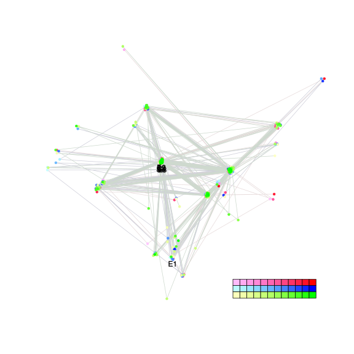
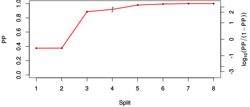
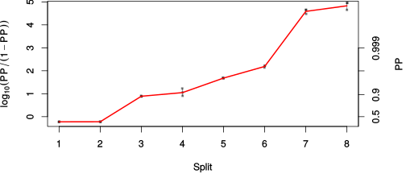

| chain # | burnin | subsample | Iterations (remaining) | command line | subdirectory | directory |
|---|---|---|---|---|---|---|
| 1 | 10000 | 1 | 90000 | bali-phy E6_AA_red3_v2_all4Manatees_BetaGamma.fas -s 23612 -n E6_red3_v2_all4Manatees_BetaGamma_c1 | E6_red3_v2_all4Manatees_BetaGamma_c1-1 | /DATA/work/ONCOGENEVOL/database/trees/Bali-Phy/red3_v2/E6_all4Manatees |
| 2 | 10000 | 1 | 90000 | bali-phy E6_AA_red3_v2_all4Manatees_BetaGamma.fas -s 79243 -n E6_red3_v2_all4Manatees_BetaGamma_c2 | E6_red3_v2_all4Manatees_BetaGamma_c2-1 | /DATA/work/ONCOGENEVOL/database/trees/Bali-Phy/red3_v2/E6_all4Manatees |
| 3 | 10000 | 1 | 90000 | bali-phy E6_AA_red3_v2_all4Manatees_BetaGamma.fas -s 28348 -n E6_red3_v2_all4Manatees_BetaGamma_c3 | E6_red3_v2_all4Manatees_BetaGamma_c3-1 | /DATA/work/ONCOGENEVOL/database/trees/Bali-Phy/red3_v2/E6_all4Manatees |
| P(data|M) = -3563.917 +- 0.120 | Complete sample: 359 topologies | 95% Bayesian credible interval: 29 topologies |
Phylogeny Distribution

| Partition support: Summary |
| Partition support graph: SVG |
{kind=link}
| 50% consensus | Newick (+PP) | SVG | |||||
| 66% consensus | Newick (+PP) | SVG | |||||
| 80% consensus | Newick (+PP) | SVG | |||||
| 90% consensus | Newick (+PP) | SVG | |||||
| 95% consensus | Newick (+PP) | SVG | |||||
| 99% consensus | Newick (+PP) | SVG | |||||
| 100% consensus | Newick (+PP) | SVG | |||||
| MAP | Newick (+PP) | SVG | |||||
| greedy | Newick (+PP) | SVG |
{kind=link}
{kind=link}
{kind=link}
{kind=link}
{kind=link}
{kind=link}
{kind=link}
{kind=link}
Alignment Distribution
Partition 1
| Diff | Min. %identity | # Sites | Constant | Informative | ||||
|---|---|---|---|---|---|---|---|---|
| Initial | FASTA | HTML | Diff | 2.3% | 217 | 1 (0.461%) | 136 (62.7%) | |
| Best (WPD) | FASTA | HTML | AU | 13.5% | 266 | 14 (5.26%) | 88 (33.1%) |
Mixing
{kind=link}
{kind=link}
| burnin (scalar) | ESS (scalar) | ESS (partition) | ASDSF | MSDSF | PSRF-CI80% | PSRF-RCF |
|---|---|---|---|---|---|---|
| 559 | 249.7 | 434.466 | 0.004 | 0.027 | 1.005 | 1.038 |
Projection of RF distances for the first 3 chains3D | Variation of split PPs across chains |
Scalar variables
| Statistic | Median | 95% BCI | ACT | ESS | burnin | PSRF-CI80% | PSRF-RCF |
|---|---|---|---|---|---|---|---|
| prior | -115.1 | (-134.7, -98.07) | 424.6 | 635 | 530 | 1.001 | 1.023 |
| prior_A1 | -105.3 | (-121, -95.77) | 571.2 | 472 | 237 | 1.005 | 1.014 |
| likelihood | -3554 | (-3565, -3544) | 28.92 | 9334 | 238 | 0.9998 | 1.006 |
| logp | -3670 | (-3690, -3652) | 266.1 | 1014 | 301 | 0.9995 | 1.015 |
| Heat.beta | 1 | ||||||
| Scale1 | 6.217 | (3.431, 10.05) | 1.006 | 268265 | 111 | 1 | 1.001 |
| S1.F.pi.A | 0.06834 | (0.05348, 0.08445) | 7.656 | 35265 | 204 | 0.9998 | 0.9993 |
| S1.F.pi.R | 0.06939 | (0.05353, 0.08585) | 7.989 | 33794 | 220 | 1 | 0.9977 |
| S1.F.pi.N | 0.0286 | (0.01968, 0.03876) | 7.638 | 35351 | 446 | 1 | 1 |
| S1.F.pi.D | 0.03942 | (0.02736, 0.05268) | 8.161 | 33086 | 232 | 0.9998 | 0.9969 |
| S1.F.pi.C | 0.06464 | (0.04741, 0.08372) | 7.544 | 35791 | 336 | 0.9999 | 0.9992 |
| S1.F.pi.Q | 0.03668 | (0.02693, 0.04749) | 7.693 | 35098 | 559 | 1 | 0.9919 |
| S1.F.pi.E | 0.0446 | (0.03282, 0.0576) | 8.378 | 32226 | 429 | 1 | 0.9954 |
| S1.F.pi.G | 0.06587 | (0.0482, 0.08519) | 8.424 | 32051 | 358 | 1 | 1.009 |
| S1.F.pi.H | 0.02359 | (0.01496, 0.03327) | 8.024 | 33651 | 317 | 0.9998 | 0.9925 |
| S1.F.pi.I | 0.0508 | (0.03841, 0.06389) | 7.905 | 34153 | 256 | 1 | 1.002 |
| S1.F.pi.L | 0.1333 | (0.1106, 0.157) | 7.491 | 36044 | 317 | 1 | 1.007 |
| S1.F.pi.K | 0.03578 | (0.02551, 0.04703) | 7.899 | 34180 | 307 | 0.9998 | 0.998 |
| S1.F.pi.M | 0.01259 | (0.006949, 0.01937) | 8.161 | 33086 | 455 | 1 | 0.994 |
| S1.F.pi.F | 0.05627 | (0.04179, 0.07171) | 8.164 | 33072 | 311 | 1 | 1.006 |
| S1.F.pi.P | 0.03029 | (0.01944, 0.0426) | 7.877 | 34279 | 505 | 1 | 0.9955 |
| S1.F.pi.S | 0.04636 | (0.035, 0.05896) | 7.751 | 34834 | 230 | 1 | 0.9979 |
| S1.F.pi.T | 0.05484 | (0.0413, 0.06932) | 7.732 | 34922 | 291 | 0.9996 | 1 |
| S1.F.pi.W | 0.02462 | (0.0148, 0.03584) | 7.681 | 35152 | 433 | 1 | 1 |
| S1.F.pi.Y | 0.05032 | (0.03641, 0.06465) | 8.027 | 33638 | 278 | 1 | 0.9967 |
| S1.F.pi.V | 0.05751 | (0.04353, 0.07199) | 7.985 | 33814 | 447 | 0.9997 | 1.01 |
| I1.RS07.meanIndelLengthMinus1 | 14.47 | (6.823, 25.86) | 7.462 | 36184 | 125 | 1 | 1.002 |
| I1.RS07.logLambda | -5.207 | (-5.861, -4.578) | 25.21 | 10709 | 209 | 1 | 1.003 |
| |A1| | 266 | (266, 272) | 1081 | 249 | 195 | 0.8571 | 1.032 |
| #indels1 | 11 | (10, 13) | 549.4 | 491 | 203 | 0.5 | 1.012 |
| |indels1| | 135 | (135, 145) | 124.2 | 2173 | 73 | 0.875 | 1.013 |
| #substs1 | 651 | (644, 654) | 719.7 | 375 | 150 | 0.8333 | 1.038 |
| Scale1*|T| | 7.989 | (7.274, 8.724) | 1.893 | 142650 | 107 | 0.9998 | 0.9996 |
| |A| | 266 | (266, 272) | 1081 | 249 | 195 | 0.8571 | 1.032 |
| #indels | 11 | (10, 13) | 549.4 | 491 | 203 | 0.5 | 1.012 |
| |indels| | 135 | (135, 145) | 124.2 | 2173 | 73 | 0.875 | 1.013 |
| #substs | 651 | (644, 654) | 719.7 | 375 | 150 | 0.8333 | 1.038 |
| |T| | 1.286 | (0.6958, 2.021) | 1.001 | 269743 | 127 | 1 | 1.001 |